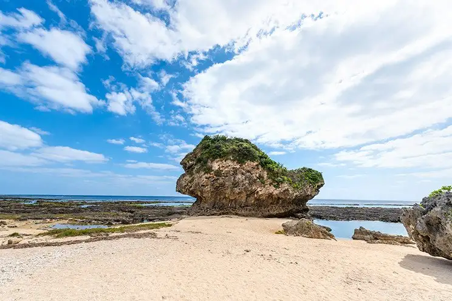
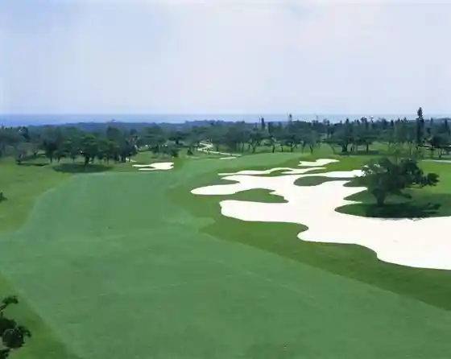
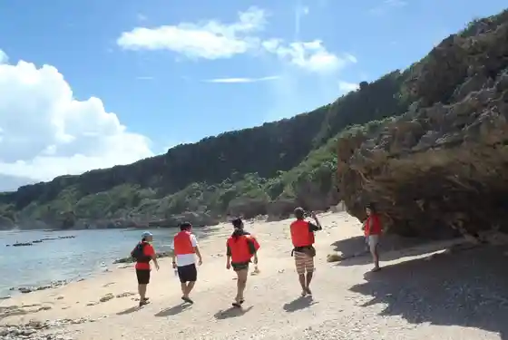

Yaese, Okinawa
Yaese · Okinawa
Yaese
Highlighted on the Okinawa map.

Sights
Gushichan Hama
Naha Gorufu Kurabu

Minami no Eki Yaese
NPO Hojin Shizentai Ken Gakko

Tsumi Ki aroma Kokoro Shintai Hada Wo Totonoe Ru
Hataori Kobo Shiyon
Za Sazanrinkusugorufu Club
Yaese Ritsu Gushikami Folk History Museum